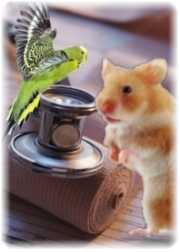

El concepto de cirugía proviene del griego (cheirourgia); significa trabajo manual y se refiere a intervenir en el organismo mediante procedimientos invasivos o semi-invasivos, utilizando instrumental específico.
En Clínica Bremen estamos preparados para realizar numerosas intervenciones, clasificadas en tres grandes grupos:
Cirugías Electivas
Son aquellas en que el dueño de la mascota toma la decisión, ya sea por conveniencia o por estética.
- Esterilizaciones y castraciones
- Cortes de cola (caudectomía)
- Cortes de oreja (otoplastia)
Cirugías No Electivas
Dependen de la enfermedad o problema que presente la mascota. Entre las más frecuentes:
- Extirpación de tumores
- Cesáreas
- Torsiones gastrointestinales
- Extracciones dentales
Cirugías de Emergencia
Como consecuencia de accidentes que hayan sufrido las mascotas, desde heridas menores hasta extensas, y fracturas de distintos grados.
La reposición de fracturas mediante osteosíntesis es el tratamiento óptimo: los extremos de los huesos se reubican y fijan con piezas metálicas, asegurando una recuperación correcta durante el tiempo necesario de cicatrización.
Nuestros médicos están especializados para realizar todos estos procedimientos. En caso necesario, el Servicio de Cirugía puede complementarse con el Servicio de Hospitalización para asegurar la mejor recuperación posible.